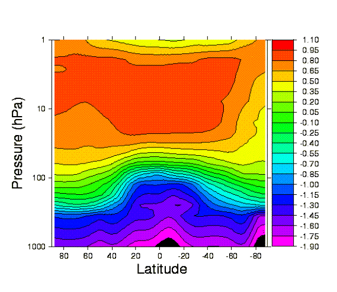

Figure 4. (a) A latitude pressure cross-section of the ozone distribution for the CCM3 data set for March. In order to be able to present the entire depth of the atmosphere on a single diagram the logarithm (base 10) is taken of the original data that was in units of parts per million by volume(ppmv). It is this log data that is plotted on the figure.
